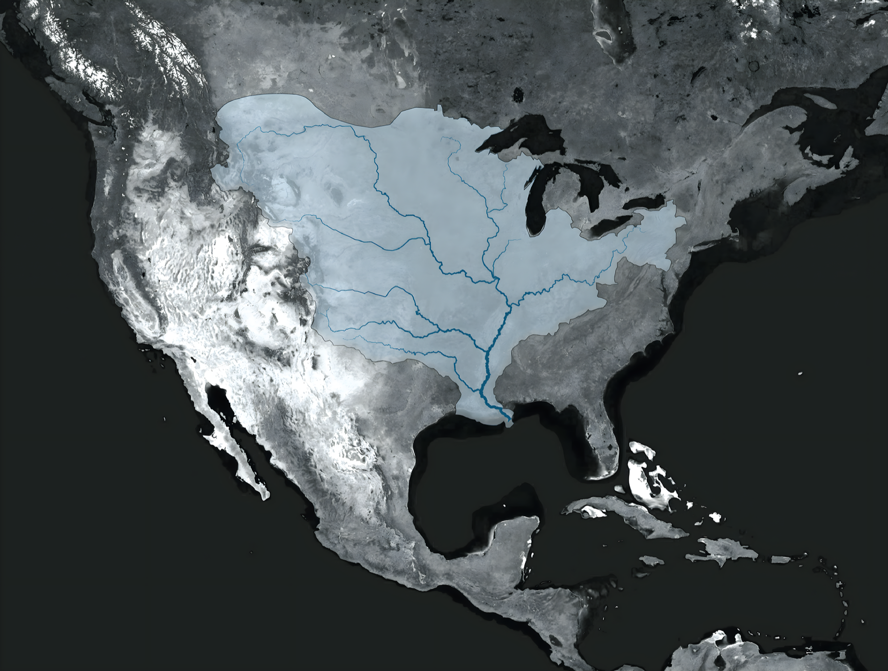
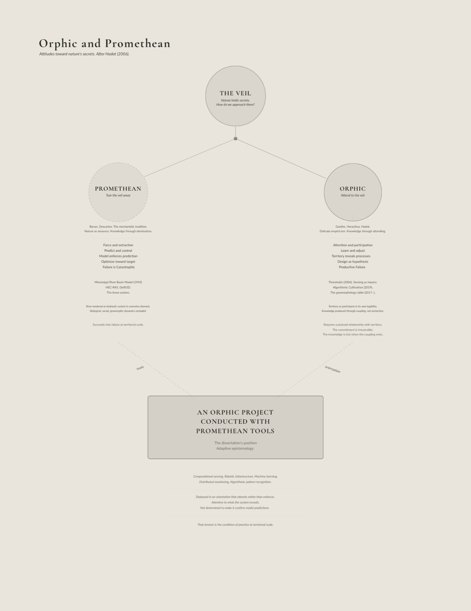
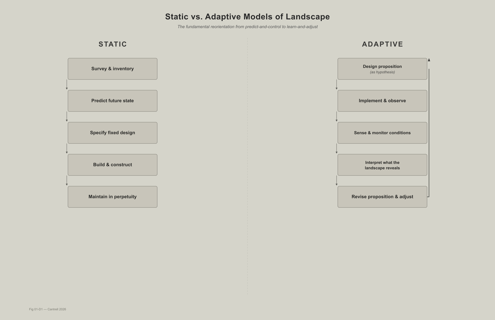
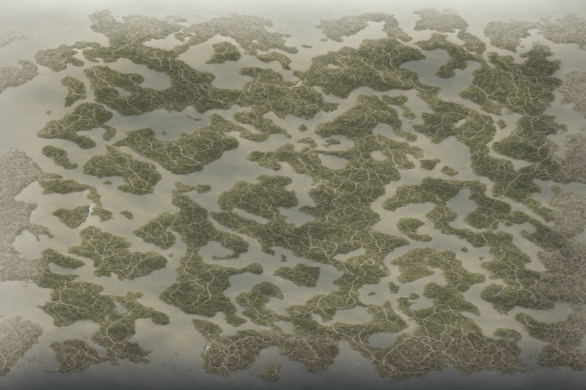

Adaptive Epistemologies and Neo-Wilds — Chapter 01
Adaptive Epistemologies and Neo-Wilds
Chapter 01
Territory
A Formed Condition
Figure 01_01 The Mississippi River at dawn, aerial from 35,000 ft | Photo by Varun Ranganathan
Introduction
The infrastructure of the Mississippi River was built to hold the
river in place. Levees line both banks for over a thousand miles, the
Old River Control Structure prevents the river from doing what rivers
do, finding a shorter path to the sea. Navigation channels are dredged,
spillways are opened and closed, pumping stations move water over and
through barriers the river once overtopped seasonally. The system is
enormous and its purpose is singular, to stabilize one of the most
dynamic fluvial systems on Earth. And it worked. The river held. The
certainty was structural and it was also epistemological, a belief that
humanity’s technical prowess of measurement and engineering could pull
the veil back on a complex, continental watershed and force it to
perform predictably. Then the coast began to drown, starved of the
sediment that seasonal flooding once delivered across three million
acres of deltaic wetlands (USGS 1995).
This dissertation begins with that paradox, that the infrastructure
built to protect a landscape can destroy it by succeeding at what it was
designed to do. Not because the engineers were incompetent but because
the epistemology was myopic, because a paradigm that treats design as
the production of stable solutions cannot account for what happens when
the solution works perfectly and the system still fails.
What follows is not an argument against intervention. It is an
argument for a different kind of knowing, one that treats design
propositions as hypotheses developed through friction with dynamic
systems rather than solutions derived from models that claim to contain
what they study. The question that drove the research was never how
do we control this? It was always, what is this trying to tell
us that we don’t yet know how to hear?
I write as a licensed landscape architect whose research and practice
sit at the intersection of computation, responsive technologies, and
ecological infrastructures. For twenty years that work has been centered
on coastal and deltaic landscapes, the territories where the failures of
predictive control are most visible and most consequential. This
dissertation is drawn from inside that practice. The arguments that
follow are not observations made from a distance but conclusions
produced through the friction of building, testing, and failing within
the systems being described.
The Territory as
Infrastructural Hybrid
The Infrastructural Field

Figure 01_06Map of Mississippi River Watershed | Bradley Cantrell
The dichotomy of the natural and constructed is no longer a useful
lens to focus the efforts of conservation and environmental design. The
acute mosaic of fields, forests, and settlements forms a continuous
infrastructural field. Interstates and railways thread through wetlands,
pipelines conveying water slice through deserts, watersheds are rerouted
for irrigation, and logistics platforms sprawl along spits of land in
estuaries. The “natural” systems have been transformed by layers of
infrastructure, now functioning as a synthetic field that is interwoven
with control systems that are both physical and procedural.
Foregrounding the environment as an infrastructural landscape highlights
the extent to which anthropogenic needs for energy, mobility, waste
disposal, and communications networks serve as the primary territorial
organizers (Bélanger 2016).
Defining the Formed
Condition

Figure 01_03Orphic and Promethean Diagram | Bradley Cantrell
The territory as synthetic substrate is a formed condition, a
landscape evolved by centuries of surveying, mapping, engineering, and
regulation. Contemporary territories are deliberately constructed
spatial organizations. The procedures of the territory, including its
zoning ordinances, subdivision plats, preservation policies, and highway
standards, constitute an organizational space in which rules and
protocols delineate the environment as decisively as physical
infrastructure (Easterling 1999). The straightened channels and the
Jeffersonian grid that dominates many environments are symptoms of a
slowly evolving abstraction that produces spatial organization
predicated on a desire for administrative predictability and ecological
stasis.
A desire for abstraction runs deep as the legacy of modernism aimed
to simplify complex systems into standardized, measured forms that
nullify localized practices and suppress the feedbacks that allow
systems to adapt to disturbance (Scott 1998). An administrative impulse
drives the development of infrastructure. Systems are modeled and
dimensioned according to predicted future events such as the 100-year
flood and projected sea level rise. An optimal configuration is
calculated. Once constructed, the system is maintained in perpetuity.
The future is treated as knowable, and the present is engineered
accordingly.
An island or spit of land attains sovereignty when it appears on
maps, receives a name, and circulates through media. Legibility, not
material presence, creates territorial claim. The divergence between
physical sand and cartographic inscription reveals the politics of
representation, the degree to which the territory is constituted through
its instruments of observation as much as through its material
processes.
Climate
Uncertainty and the Limits of Prediction
The Failure of Static
Approaches

Figure 01_08Static vs Adaptive Diagram | Bradley Cantrell
A practice that relies on environmental stability falters in an age
of accelerating climate change. Global sea level rise can be measured
and modeled yet remains fundamentally indeterminate in its effects and
outcomes. The predictive approach fails to recognize the asymptotic
relationship between modeling the future and living in an uncertain
present. It abstracts historical conditions to build a narrative of a
simplified and controllable present, thereby failing to recognize the
agency of complex ecological reactions.
Solutions designed to resist climate change can paradoxically
accelerate change in local systems. Tidal wetlands and their marshes
persist when internal feedbacks, the relational underpinnings of plant
productivity, sediment deposition, and hydrological inundation, keep
pace with rising waters rather than retreating under accelerated rates
of change (Kirwan and Megonigal 2013). In this context, the constructed
levee or seawall represents a static solution that disrupts the dynamic
processes enabling marsh persistence. The engineered structure, designed
to protect against a predicted future, instead accelerates the
degradation it was meant to prevent.
Embracing Ecological
Dynamism
This critique of predictive control does not advocate for abandoning
intervention but rather for reconceptualizing the relationship between
design and environmental process. The challenge lies in developing
approaches that work with, rather than against, the inherent dynamism of
ecological systems. This requires shifting from a paradigm of control to
one of cultivation and from imposing predetermined forms to nurturing
adaptive capacities (Lister 2007; Raxworthy 2018).
Landscape architecture operating within this dynamism cannot rely on
stable solutions maintained to function indefinitely. It calls for
methods capable of learning from the systems they engage, interfaces
that produce knowledge through the interaction of human, machine, and
biological intelligence, and design frameworks that treat the ongoing
negotiation between intention and ecological agency as the primary
medium of practice. The decisions about what to prototype, where to
test, whose knowledge counts as evidence for revision, and who bears the
cost of hypotheses that fail are not technical questions with technical
answers. They determine whether a drowning island is a sediment budget
problem or a question of responsibility and belonging (Allen 1999;
Bélanger 2016).
My projects and research in choreographing sediment dynamics enable
actors to create lands, whether topographic or bathymetric. The
capability arrives before the ethics do. We learn how to reshape
territory first and only afterward interrogate how that capability can
be used or weaponized. That sequence is not incidental. It is the
condition of practice in geopolitical projects, and it obliges designers
to acknowledge that their knowledge is never structurally neutral.
The Territory as Nervous
System
The territory is an evolving nervous system. Moisture probes in
agricultural fields, pressure transducers in storm sewers,
accelerometers across bridges, air-quality monitors on streetlights
produce a continuous stream of data that redefines landscapes as arrays
of measured behaviors and programmed alerts (Seibert 2021). Sensor
networks track microclimates, carbon flux, animal movements, and
pollutant plumes across temporal scales from seconds to decades. A
rainforest wired with sensors measuring soil moisture, canopy
temperature, and carbon exchange is no longer simply a patch of
vegetation. It is known through its data and is tunable within that
abstraction.
Bratton (2025) argues that computation is a planetary phenomenon
discovered as much as it was invented, not merely a human industrial
product. The territory as computational substrate is not a metaphor. It
is the condition within which environmental design now operates. The
question is not whether to engage this condition but how, and toward
what ends.
The consequences of inattention are not abstract. The choice of where
sensors are placed, what phenomena they measure, how frequently they
report, and who has access to the data determines which communities
receive protection and which face exposure. Centralized sensor networks
often serve institutional aims while rendering the data less accessible
to the communities most affected by its implications. Digital twins
tighten the feedback loop between measurement and autonomous action in
ways that can further mediate how environmental phenomena are
experienced by inhabitants (Ye et al. 2023). When life is represented
through dashboards, the experience of wading through waterlogged streets
or watching a shoreline erode over generations risks being understood
solely through abstraction rather than lived encounter (Greenfield
2013).
The sensing infrastructures that constitute the contemporary
territory are not neutral instruments applied to a pre-existing
condition. They are expressions of values that actively shape what the
territory becomes. What is monitored becomes legible, what is legible
becomes governable, and what is not monitored falls outside the frame of
institutional attention entirely (Gabrys 2016). A marsh without a tide
gauge is not merely unobserved. It is administratively invisible,
excluded from the models that allocate protection and the budgets that
fund it. The nervous system of the territory does not simply report on a
landscape. It determines which landscapes are allowed to matter.
Recognizing Non-Human Actors
The formed condition of the territory is not solely the product of
human intention and action. Non-human actors, from soil microorganisms
to hydrological processes to plant communities, actively shape
territorial development (Seibert 2021). Recognizing these material
agencies requires moving beyond anthropocentric frameworks that position
humans as the sole agents of environmental change.
This recognition has methodological implications. Design approaches
must account for the ways in which materials and processes resist,
exceed, or transform human intentions. The behavior of sediment in a
tidal marsh, the growth patterns of vegetation, the movement of water
through a watershed, these are not passive responses to human
intervention but active processes with their own logics and tendencies.
When a sediment diversion on the Mississippi Delta delivers material to
a receiving basin, the sediment does not simply accumulate where
engineers projected it would. It sorts itself by grain size according to
flow velocity. It colonizes in patterns shaped by wave exposure and
salinity gradients. It builds landforms whose geometry reflects the
interaction of hydraulic forces and biological activity rather than the
specifications of the diversion’s design. The resulting landscape is
co-authored by the infrastructure and the material, and the material’s
contribution cannot be fully anticipated.
Designing within these material processes requires a form of
ecological intelligence that recognizes the relational nature of
material behavior. The performance of a living shoreline depends not on
the properties of its materials alone but on their interactions with
tidal patterns, wave energy, sediment supply, and biological processes.
Mical (2012) describes soft infrastructures that function more like
ecological processes than engineered machines. They adapt and evolve in
response to changing conditions rather than maintaining a fixed
configuration. Maintenance, in this frame, is not the servicing of a
finished form but an ongoing negotiation between designed intention and
biological agency, what this dissertation calls the cultivant, a concept
developed fully in Chapter 11. The territories examined in this work are
always in process, always being tended, and the question of who tends,
to what standard, and in whose interest is inseparable from the act of
design.
The territory is a formed condition. Not a natural landscape with
infrastructure laid on top but a product of centuries of surveying,
engineering, regulation, and computation that has made the ecological
and the administrative, the biological and the digital, inseparable. The
levee and the marsh it starves are parts of the same formation. The
sensor network and the community it renders visible or invisible are
parts of the same formation. The zoning ordinance and the settlement
pattern it produces are parts of the same formation. The territory was
not formed once and left to persist. It is being formed continuously, by
the infrastructure embedded within it, by the policies governing it, by
the organisms inhabiting it, and by the data systems now reading it.
This chapter describes that condition and the failures that emerge when
design treats a living formation as a problem to be solved.
The formed condition of the territory cannot be addressed through
solutions in the conventional sense. Solutions assume bounded problems
with optimal configurations, yet predictive solutions have a greater
chance of displacing or obscuring underlying conflicts than ameliorating
them (Holmes 2020; Morozov 2013). What the condition demands instead are
interfaces. Designed connections through which human intention,
ecological process, and computational infrastructure meet and influence
one another across time. An interface in this sense is not a screen or a
control panel but a site of exchange, a point where biological,
technical, and institutional agents encounter one another and where the
terms of their interaction can be negotiated and revised (Allen 1999;
Robinson and Davis 2018).
The distinction between territory and landscape is not merely
conceptual. It carries different orientations to the communities,
nonhuman species, and ecological processes that a site sustains.
Territory is an abstracted space composed of objects and processes for
the purposes of state administration. Borders, census tracts, tax
parcels. Landscape is the living medium, the evolving array of materials
and relationships composed and choreographed to produce life-catalyzing
forms. Designing in the landscape rather than the territory means
accepting the obligation to work with the site’s own logic rather than
imposing the state’s management framework on it.
Synthetic Ground and
Coupled Ecologies

Figure 01_10Pseudo Ecologies | Bradley Cantrell
Interfaces accumulate. Over decades, technical objects layer with
computational outputs and regulatory protocols until what emerges is a
synthetic ground that is not a passive substrate but a ground that acts.
This is a socio-cultural and techno-ecological regime made material,
shaped as decisively by extraction corridors and fiber optic cables as
by the topographies that environmental phenomena produce (Shannon and
Smets 2010).
A sediment pipeline feeding a marsh creation site offers one way into
this problem. The pipeline itself is infrastructure and the deposited
soils are situated in ecology. But the pipeline belongs to the same
operational web as the material it delivers and the landscape that
receives it. The soils support vegetation and that same vegetation traps
more sediment. The question of where infrastructure ends and ecology
begins assumes a boundary that no longer corresponds to system behavior.
Territories operate as coupled ecologies, assemblages of mechanical,
digital, and biological components bound through feedbacks that resist
categorical separation. The coupling names the condition in which each
component’s behavior is constituted through its relationships with the
others, and in which the system’s intelligence exceeds what any
component produces alone.
Tidal wetlands illustrate this condition, though the vividness should
not be mistaken for simplicity. Whether a marsh persists or drowns
depends on couplings the marsh cannot control. Plant productivity,
organic matter accumulation, and sediment trapping all matter, as do
decisions made in offices and legislatures miles away, including levee
placement, sediment diversion schedules, and dredging policy (Kirwan and
Megonigal 2013; Temmerman and Kirwan 2015). Engineering choices alter
plant physiology. Policy instruments entangle with sediment dynamics.
Clear attribution of cause becomes impossible because the system’s
behavior emerges from interactions that no single variable controls.
From an ontological standpoint, and the ontology matters here, these
territories are assemblages of machines, where the definition of machine
reads broadly. Rivers act in the sense that they constrain and enable
other entities. Similarly, ports act, legal codes act, wetlands act, and
markets act. All can be understood as entities shaping each other’s
possibilities without reserving agency for humans or devices alone
(Bryant 2014). The patterns observable at any moment emerge from
intersecting machine logics whose interactions exceed any single
designer’s intentions.
Bach (2009) extends this insight from ontology to epistemology. If
mind is software running on hardware, a pattern of information
processing that is substrate-independent, then biological,
computational, and ecological systems can produce outputs that exceed
the specifications of their designers. A marsh that reorganizes its
sediment dynamics in response to altered hydrology is not merely
reacting. It is computing a response of its own, working out what the
altered conditions require in ways that exceed what any model was built
to project. The territory is not just an assemblage of machines. It is
an assemblage of machines capable of generating knowledge that the
design did not put there.
Working within synthetic ground means adjusting relationships among
machines rather than imposing stable form. The question confronting
territorial practice is not whether to engage these coupled systems, as
that decision was made centuries ago and is inscribed in every levee,
drainage district, and straightened channel. The question is how
intentionally to engage, toward what ends, and with what capacity for
knowledge production.
The profession has begun to answer that question, though
incompletely. Living infrastructures, constructed wetlands, beneficial
sediment placement, engineered shorelines, have become standard practice
in coastal management, an acknowledgment that biological processes can
perform work that engineered systems cannot sustain alone. But these
approaches still operate largely within a management paradigm, biology
enrolled to serve predetermined outcomes. What this dissertation calls
wetware, developed in Chapter 09, goes further. It embeds computation
into the biological relationship, coupling organisms with sensing and
actuation so that the living system is not merely performing but
producing knowledge through its own responses. Whether biology serves as
a tool or participates as a partner in the design process depends on
this difference.
Cultural
Landscapes at Risk: Islands, Shoals, and Thresholds
The stakes of coupled ecologies are not abstract to humanity. They
are places with names and people with histories.
In estuarine regions like the Chesapeake Bay, subsidence, sea-level
rise, and modified sediment logistics have steadily eroded the
terrestrially low islands over the past 150 years. These islands are
homes to communities of watermen, their families, churches, and
cemeteries. The land beneath them has steadily disappeared into the bay.
Some islands persist in diminished form, ringed by bulkheads and
revetments that slow but cannot stop the inevitable retreat (Cronin et
al. 2005). Every year the perimeter of the islands shrinks and the
question of what comes next is urgent.
Ethnographic accounts from Tangier Island depict what the process of
an eroding home feels like from inside a community experiencing it.
Houses flooded repeatedly, raised on new foundations, and then flooded
again. Churchyards where graves are undermined by wave action and the
buried exposed by the sea. The daily rhythms of crabbing and oystering
adjust, decade by decade, to shifting channels and beds of eelgrass
(Swift 2018). Decisions about protection, accommodation, or relocation
are entangled with deep attachments, sometimes religious in character,
always constrained by the economic realities that limit choice.
The decision to leave is rarely dictated by physical conditions
alone. Social networks, place attachment, and signals from policymakers
matter. When a government buyout program is implemented, some leave who
might otherwise stay, and when none exists, some stay who might
otherwise leave. The threshold of inhabitability is as much social as it
is geomorphic (Richter 2015). The drowning of the Chesapeake Bay is
simultaneously a matter of sediment budgets and sea-level rise entangled
with narratives that frame stories of loss, identity, responsibility,
and belonging.
These islands sit within long histories of colonization, extraction,
and racialized geographies that cartography has inscribed into imperial
projects of exploration and resource capture (Smith and Hole 1624). In
more recent scholarship these littoral zones are framed as sites of
Black and Indigenous life that unsettle colonial, land-based imaginaries
(King 2019). What is lost when an island drowns is never only the land
itself.
The Chesapeake Bay islands frame an ethical demand that the research
program takes seriously as a design question, not only as a political
observation. Prototyping the Bay, a design research studio I
have taught at the University of Virginia since 2018, engages the
Pocomoke Sound (Cantrell 2025, course syllabus), a marginalized
environment of sea-level rise, land subsidence, and shifting ecological
communities. Its first course objective asks students to develop
coherent design values that speak to their convictions regarding the
cultural, technical, and philosophical basis of their design research.
This is not a soft opening exercise. It is the insistence that adaptive
design methods are not ethically neutral, that the choices embedded in
every design proposition carry consequences for the communities and
organisms the site sustains.
When design propositions function as hypotheses, the ethical
dimension is not separable from the technical content. The decision
about what to prototype, where to test, and who bears the cost of
revision determines whether adaptation serves the communities most at
risk or repeats historic patterns of dispossession under the banner of
progress. Monitoring that reveals disproportionate burdens demands
trajectory adjustment, not a note in a report but a redesign. Strategies
addressing land loss in the Chesapeake and elsewhere must hold this
demand as a design constraint, not an afterthought.
Political Ecologies of the
Interface
Sensors, models, and automated controls have become central tools and
methods for environmental governance. The interface where data is
collected, processed, and acted upon has emerged as a technological
object where power concentrates.
The decisions of what to monitor, how to model, and who has access to
the levers of control determine who receives protection and who faces
exposure. Understanding the political ecology provides tools for parsing
these dynamics and confronting the question of who wins, who loses, and
by what mechanisms (Robbins 2012).
Green infrastructure is promoted as a technical solution for flooding
and water quality, yet its siting, design, and branding often channel
investment into some neighborhoods while leaving others underserved.
Gentrification haunts these projects as amenities raise property values
and displace the communities most at risk from a changing climate. The
metrics of success measure acres treated and gallons detained while
rarely counting who was displaced.
The promise of the smart city adds another layer by treating the city
as an abstraction of data that privileges efficiency and investment over
lived experience and democratic contestation (Greenfield 2013). When
life is represented through dashboards, residents become data points
defined as users, consumers, and risks rather than as political subjects
capable of challenging the terms under which they are governed.
The same frameworks operate in flood and coastal management where
model outputs become the primary basis for risk maps, insurance rates,
or investment priorities, and the assumptions embedded in those models
gain exponential influence while remaining opaque to the most affected
(Collier, Mizes, and von Schnitzler 2016).
A politically attuned approach treats interfaces as negotiable
constructs. Where the sensors go, which variables are measured, how
results are visualized, and who has a voice when protocols are revised
become explicit design topics. The aim is not to abandon technological
tools but to embed them in processes that foreground equity,
accountability, and the possibility of contestation, keeping multiple
voices and multiple species inside the system as it adapts.
Adaptive Epistemology
The condition described across this chapter, territories formed by
centuries of engineering and computation, ecological systems that resist
prediction, sensing infrastructures that constitute as much as they
report, communities whose survival depends on design decisions made in
their name or without their knowledge, points toward a fundamentally
different relationship between design and knowledge. Design propositions
cannot function as static solutions delivered to stable sites. They are
better understood as hypotheses, developed through friction with the
systems they engage, revised through monitoring, and held provisionally
against the certainty that the landscape will do things no model
anticipated.
This dissertation develops that reorientation through six frameworks
distilled from twenty years of practice. Multiple Intelligences
describes the co-production of knowledge by human, machine, and
biological agents. Technogeographies of Sensing addresses the political
and spatial implications of what gets measured and by whom. Wetware
names the coupling of biological and computational systems as a
knowledge-producing medium. Generational Robotics extends design
learning across timescales exceeding human institutional memory. Coupled
Ecologies identifies the territorial condition in which biology,
computation, and infrastructure are bound through feedback into a single
operative system. Reflexive Stewardship is the ethical commitment to
remaining answerable to what the landscape is becoming and to the
question of who benefits and who bears the cost. Chapter 02 develops
adaptive epistemology, the epistemological commitment that organizes all
six, with the individual frameworks developed in the chapters that
follow. Running through all six is a practitioner's disposition this
dissertation calls the cultivant, developed fully in Chapter 11, the
ongoing negotiation between designed intention and biological agency in
which maintenance is the primary design act.
This reorientation should not be confused with adaptive management.
Adaptive management, as developed in conservation biology from Holling’s
resilience work forward (Holling 1973, 1978), proposes iterative cycles
of action, monitoring, and adjustment, but its epistemological
assumptions remain within the predictive paradigm, the goal is still to
reduce uncertainty and improve model accuracy over time. Adaptive
epistemology, as this dissertation develops it, makes a different claim,
that design practice is itself a mode of knowledge production, that the
design proposition generates categories of knowledge that cannot be
produced in advance through modeling alone. The distinction is not
between managing adaptively and managing statically. It is between
treating knowledge as something that precedes action and treating it as
something produced through action. Chapter 02 develops this distinction
and its implications.
The contemporary response to the failures described across this
chapter has been overwhelmingly technical. More sensors, more refined
models, more powerful computational tools applied to the same
territorial systems. This response is necessary but not sufficient,
because the difficulty is not a deficit of data. It is the
epistemological frame within which the data is collected, interpreted,
and acted upon. Computation deployed within a predictive paradigm does
not correct the paradigm’s limitations. It compounds them. Models that
run at higher resolution produce predictions that are more precise and
equally wrong when the system crosses a threshold no historical record
anticipated. Sensing infrastructure that monitors more variables more
frequently generates institutional confidence that can override the
embodied knowledge of communities who have inhabited the territory
across generations. Algorithms that optimize toward predetermined
objectives narrow the range of futures the territory can explore,
collapsing the adjacent possible into the single trajectory the model
specified. The infrastructure tradition is not failing for lack of
technology. It is failing because the epistemological commitment that
organizes the technology has not been examined. This dissertation
examines it.
The political context of territorial design cannot be separated from
the design research it enables. The NEOM consultation (2022–25),
developed with Adam Mekies through Sherwood Design Engineers, makes this
explicit. NEOM is a project of an authoritarian state, funded by
sovereign wealth derived from the extraction and sale of fossil fuels,
displacing Indigenous Huwaitat communities from their ancestral
territories to make way for development that replicates in built form
the political absolutism of its client. These facts are not footnotes to
the design research. The political economy of the project shaped what
was possible to investigate. The scale of resources, the speed of
decision-making, the absence of democratic contestation all enabled
design propositions that would have been difficult or impossible to
develop under different institutional conditions. The knowledge produced
in that context carries the imprint of how it was produced.
The design propositions developed in the consultation make
intellectual contributions to the discipline, contributions developed
fully in Chapters 05 and 09. The doctoral research productively holds
both. The contribution and the political conditions that produced it,
the adaptive epistemology and the authoritarian epistemology that funded
the resources to develop it. Reflexive stewardship is not the
elimination of this tension. It is the commitment to remaining honest
about it and to asking, throughout the work, how findings generated
under one set of political conditions might be translated into contexts
governed by different values.
If this is the epistemological problem, prediction and control
failing at the scale of territorial dynamic systems, how did this kind
of practice actually develop? What communities, collaborations, and
institutional conditions make an alternative form of knowing possible?
And what does it look like to produce knowledge through design rather
than to apply knowledge through it?